Yeterartıkçekeroldumşucihanıngamını
5,Bade-ivuslatiçilsin,kase-ifağfurdan
6,Manioluyorhalimitakrirehicabım
7,Atladımbahçenegirdim
8,Şahane gözler, şahane.
Makber'iokutursa,heryerkaranlık,pürnuromevki...
Elektriklerisöndürtürdü,karanlıktasöyletirdi.
Dinlemek istediği sanatçıları Çankaya'ya, Dolmabahçe'ye davet ederdi.
Cumhurbaşkanıolduktansonrasadecebirkezkonseregitti.AnkaraRadyosu'nun
sanatçısıMelekTokgöz'ünYeniSinema'dakikonseriydi.
Birbuketdeçiçekgöndermişti.
Başkentdedikodularlaçalkalandı...
Halbukisebebibambaşkaydı.
Halk müziğinin ve Batı müziğinin yaygınlaşması için, alaturka müziğin
radyolarda yayınlanması kısa bir süre yasaklanmıştı. Mustafa Kemal'in bizzat alaturkakonserinegitmesi,buyasağınresmensonaerdiğiniilanediyordu.
1936...SadettinKaynak'ın,SelahattinPınar'ın,NubarTekyay'ınöğrencisiolan18
yaşındakibirgençkız,radyodafırtınagibiesiyordu.
Dinlemekistedi,davetetti.
Dolmabahçe Sarayı'na getirdiler. Genç kızın heyecandan bacakları titriyordu, yürüdümüuçtumu,tamolarakhatırlamıyordu,kendinisalondabuldu.
"Gel çocuk" dedi Mustafa Kemal... Yanındaki sandalyeye oturttu. Genç kızın elinde repertuvar defteri vardı. Aldı, sayfalarını inceledi, 600 civarında şarkı bulunuyordu,üçtanesiniişaretledi.
"Hadibakalımbunlarıokudinleyelim"dedi.
MustafaKemal'inensevdiğiveilkişaretlediğişarkı"manioluyorhalimitakrire hicabım,üzmeyetişirüzme,
firakınlaharabım"dı.Tatyosefendininbestesiydi.
Mustafa Kemal'in büyük beğenisini kazanan, sadece sesiyle değil, hayata karşı duruşuyla"Curnhuriyet'indivası"unvanınıalanbugençkız,MüzeyyenSenar'dı.
SafiyeAylaiçin"dünyaçapında"diyordu.
Onunsesinden YanıkÖmer'i dinlemeyedoyamazdı.
YemenTürküsü'nü dinlerkengözlerindenyaşsüzülürdü.
"Hep sen bize misafir geliyorsun, bir akşam da biz sanj misafir gelelim, şarkılarınıseninevindedinleyelim"dedi.
Safiyemutluluktanuçuyordu ama, biryandan dakarakara düşünüyordu,öksüz ve yetimdi, darüleytam' da büyümüştü, öğretmen olmuştu, maaşı çok azdı, yoksul bir genç kızdı, evinde eşya namına bir şey yoktu, şeref misafirini nasıl ağırlayacaktı?
Halbuki,MustafaKemalvaziyeti gayet iyibiliyordu.
Kendisini zaten buamaçladavetettirmişti.
Ertesi gün, Safiye'nin evinin önünde iki kamyonet durdu. Salondan mutfağa, birbirinden güzelev eşyalarıindirildi.MustafaKemal'insürprizhediyesiydi.
Birgün,trenseyahatindeydi,kahvesiniyudumluyordu.
KütüphanecisiNuriUlusu da yanındaydı.
"Gramofonabirplakkoy da dinleyelim"dedi.
Nuri kapağına bilebakmadantesadüfenseçti...
MünirNurettin'inplağınıkoydu.
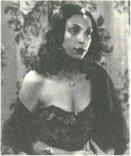
MustafaKemalsesiduyarduymazkoltuğundansıçradı...
"Çabukkapatçabuk,başkaplakkoy"diyebağırdı.
Nurineredengeldiğinişaşırmıştı.
ApartoparMünirNurettin'içıkardı,SafiyeAylaplağıkoydu.
"Tamamşimdigüzeloldu"dediama,arkasıvardı..."MünirNurettin'inoradane kadarplağıvarsahepsinibul,banaver"diyeemretti.
Nuriüstüsteduranplaklarabaktı,dörttaneMünirNurettinvardı.
"Camıaç"dedi.
MünirNurettinplaklarınıdışarıfırlattı!
Öfkeylekahvesiniyudumlamayadevametti.
Seyahatbitti,Ankara'yageldiler...
Nuri köşkte çalışanlara anlattı. Berber, şoför, bahçıvan, herkes bunu
konuşuyordu. Garson İbrahim dayanamadı, keyifli anına denk getirdi, "paşam meraktançatlıyoruz,plaklarınedenattınız?"diyesordu.
MustafaKemalkendiyaptığınakahkahalarlagülmeyebaşladı.
Veanlattı...
"Hatırlarsınız,MünirNurettinbeyDolmabahçe'yegelmişti.Sofradagüzelgüzel şarkı terennüm ederken, ben de çok keyifliydim, eşlik ediyordum. Bir müddet sonra şarkısını kesti, kulağıma eğilerek, kimsenin duymayacağı şekilde 'lütfen benimle beraber söylemeyin, şarkıyı bozuyorsunuz, rahat söyleyemiyorum'
demez mi... Belki kimse sezinlemedi ama, sustum, cevap vermedim, bir daha eşlik etmedim. Şarkı bizim işimiz değil ama, keyiflenmişiz, söylüyoruz, beyefendiyirahatsızetmişiz.Gücendimtabii.Olaybudur."
Şarkısöylemeyiişteböylesineseviyordu.
Çocuksubiröfkeylehıncınıalmıştı.
Elbettepişmanolmuştu.
MünirNurettin'iDolmabahçe'yetekrardavetetti.
Budefasadecedinledi,eşliketmedi!
MünirNurettinplaklarınıbiriktirmeyedevametti.
Ankara'nınilkorkestrasınıkurdu.
1923... Mızıka-yı Hümayun'da yetiştirilen Zeki Üngör, Makam-ı Hilafet
FilarmoniMüzikası'ndabaşkemanaydı.
Henüzhilafetkaldırılmamıştı.
MustafaKemalmektupyazdı,Ankara'yaçağırdı.
"Artıkberaberçalışacağız"dedi.
Zeki Üngör liste yaptı; piyanist Sadir, viyolonist Halim ve Nedim, flütist Kadri'yiAnkara'yagetirdi.Başkent'inilkorkestrasıÇankayaKöşkü'ndeMustafa Kemal'ekonserverdi.
Butadımlıktı..."İstanbul'dakiSarayOrkestrası'nıAnkara'yataşıyalım"dedi.
85 kişilik orkestra komple getirildi. Osmanlı Bankası'nın tren istasyonundaki ambarınayerleştiler.Halkaaçıksenfonikonserlerinebuambardahazırlandılar.
CumhurbaşkanlığıSenfoniOrkestrası'nınnüvesinioluşturdular.
1930...
Paris'tekieğitimibitiripyurdadönenUlviCemalErkin,Çankaya'daresitalverdi.
MustafaKemalbuyetenekligençlegururduydu,köşkünpiyanosunuhediyeetti.
Aradanbirkaçgüngeçti...
PiyanohâlâÇankayaKöşkü'ndekiyerindeduruyordu.
Niyegönderilmediğinisordu.
"Öğretmen maaşıyla zar zor ev kiralamış, çok küçük bir ev, piyanoyu koyacak yeriyok,odayasığmıyor"dediler.
"Ohaldepiyanosunukoyabileceğibirevtutun"dedi.
Müzikkitaplarınıincelerdi.
Fransız müzik teorisyeni Albert Lavignac'ın Müzik ve Müzisyenler eserini orijinalindenokumuştu,satırlarınyanınanotlaralmıştı.
Barokmüziğemeraklıydı.
Enstrümanlarıntarihselgelişiminiaraştırıyordu.
Rahmetliolduğundasayımyapıldı...
ÇankayaKöşkü'de464adetplakvardı.
Beethoven'ın
eserlerini
seslendiren
Viyana
Filarmoni
Orkestrası'nın,
PhiladelphiaFilarmoniOrkestrası'nınalbümlerinisatınalmıştı.
Cazdinliyordu.
ûa
Müzikarşivinde,PaulWhiteman'dan LastNight, JanGarber'den Sweet Georgia Brown, Jack Hylton'dan Nothing Else To Do, Harry Roy'dan Cheek to Cheek parçalarıvardı.
Rebetikodinliyordu.
RozaEskenazi'den Murmuraki'yiçokseverdi.
Tango,vals,foxtrotplaklarıvardı.
Engenişliste,elbetteTürkmüziğineaitti.
Hafız Kemalbeyin gazelini,hafız Osmanefendininklarnettaksimini,udiNevres beyin, tamburi Cemil beyin, kanuni Hüseyin Sadettin beyin taksimlerini dinlemeyedoyamazdı.
DenizkızıEftalya'nın 20'ye yakınplağıvardı.
MünirNurettin'den EtmeBeyhudeFigân,YüzünŞen...
HikmetRızahanımdan KirpiklerininHerTeli,SonHatıra...
Belkıshanımdan AşkımaUzaktanBakan,Öpüşürken...
Afitap'tan BenimTatlıEsmerim,BahçenizdeBirGülOlsam...
Nezahathanımdan SeniSevdimşarkılarıvardı.
Çankaya'da, Dolmabahçe'de, Yalova'da, Savarona'da, treninde, gramofonsuz mekânı yoktu. Bazen huşu içinde senfoni dinlerken ormanı seyrederdi, bazen türküdinlerkensessizsessizdenizedalıpgiderdi.
BirgünRuşenEşrefledertleşiyordu...
"Sessizkalamıyorum,sessizliğetahammüledemiyorum,oyüzdenbugramofon makinesiişteböyleyirmidörtsaatkapımdaçalıyor"dedi.
Şahanedansederdi.
Çocukluğundanberimeraklıydı.
Tee Selanik'ten mahalle arkadaşı olan Asaf İlbay anılarında anlatıyor: "Rüştiye talebesiydik,MustafaKemalazınlıklarınserbest
hayatından yararlanarak edindiği birkaç dostunun evine gider, o dönemin modasınagörepolka,mazurka,kadril
ve vals gibi bizlerin adını bile çok sonradan duyduğumuz salon oyunlarını öğrenir,dansederdi."
Bir başka mahalle arkadaşı Fuat Bulca'yla birlikte Halil efendinin salonuna gidiyorlardı,Selanik'inilkdansokuluydu.Valsvepolkaöğreniyorlardı.
1935... Sovyetlerin en ünlü opera ve bale sanatçıları, efsane besteci Drnitri Şostakoviç liderliğinde Türkiye'ye geldi. Beş hafta kaldılar, İstanbul, Ankaraveİzmir'de23konserverdiler.
Mustafa Kemal tarafından bu turneye öylesine önem veriliyordu ki, Sovyet sanatçılarabakanlarımızınmakamotomobilleritahsisedilmişti.
LevOborin,NikitaMagarof,DavidOistrakh,LevSteinberg,ValeriyaBarsova,
Maria Maksakova, Aleksander Pirogov, Ivan Zhadan, Panteleimon Nortsov, Natalia Dudinskaya, Asaf Messerer. .. Turnenin sonunda konuk sanatçılar onurunaAnkara'dabalotertiplendi.
Mustafa Kemal, Bolşoy'un sopranosu Maria Maksakova'yı dansa kaldırdı, vals yaptı.Saat22'debaşlayanbalo,sabah7'yekadarsürdü!
TürkiyehatıralarınıkalemealanSovyetsanatçılarşuortakyorumdabuluşmuştu:
“MustafaKemalçoketkileyicidansediyor."
(Mustafa Kemal, Şostakoviç'in heyetinde yer alan genç tenor Ivan Zhadan'ın sesini mükemmel bulmuştu. Kültür devrimimize katkı sağlamak üzere Türk vatandaşlığına davet etti, hatta, kendisini güvende hissetmesi için “evlat olarak alabileceğini"söyledi.
Zhadankabuletmedi,ülkesindenayrılmakistemediğinisöyledi.Maalesef,İkinci DünyaSavaşı'ndaNazilereesirdüştü,cankorkusuylaNazilerekonserverdi.Bu
tavrınedeniyle,savaştansonraülkesindeistenmeyenadam
oldu.ABD'yegöçetmekzorundakaldı,kariyerinioradasürdürdü,dünyanınen
önemlitenorlarındanbirioldu.)
(Mustafa Kemal, Rus konuklara altın kaplama sigara tabakaları hediye etmişti.
SanatçılararasındabulunanDavidOistrakh'ın 1968 yılındaevisoyuldu,çalınan eşyaları arasında efsane kemanıyla birlikte Mustafa Kemal'in hediyesi altın sigara tabakası da vardı. Bu soygun, Rusya'da roman yapıldı, televizyon dizisi yapıldı.) £
Muhteşemzeybekoynardı.
"Millidans"olmasını arzu ediyordu.
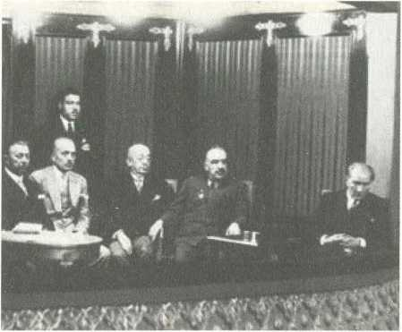
SelimSırrıTarcan'abuyöndetalimatvermişti. "Zeybek hersosyalsalonda,kadın erkekbirlikteoynanabilir,oynanmalıdır"diyordu.
Köy düğünlerine denk geldiğinde, sırtından ceketini fırlatır atar, içten, doğal neşesiylehalayakatılırdı.
Tiyatronunhamisiydi.
Sanatın bu dalıyla Sofya, Viyana, Karlsbad günlerinde tanışmıştı. Tiyatronun insanıinsanlaanlatmagücünehayrandı.Tiyatrocularabüyüksaygıduyardı.
Cumhuriyet'in ilk yılları... Muhsin Ertuğrul'un başında bulunduğu Darülbedayi turneyle Ankara'ya gelmişti, Vedat Nedim Tör'ün Kör isimli piyesini oynacaklardı,MustafaKemaldeseyredecekti.
İçişleribakanıŞükrüKaya,MuhsinErtuğrul'uuyardı."Paşa'nındurumuyoğun,
birazgeçkalabilir,ogelmedensakınperdeyiaçmayın"dedi.
MuhsinErtuğrulprensipsahibiydi."Bizgeleneğimizgereğisaatdokuzoldumu perdeyiaçıpoyunabaşlarız"cevabınıverdi.
"Amanetmeeyleme"dediler,nafile...
MuhsinErtuğrulkararlıydı.
ÜstelikMustafaKemal'igayetiyitanıyordu.
"Benimbildiğimreisicumhurherşeyibırakır,tiyatroyazamanındagelir"dedi.
Ogece,birincizilçaldı,yok.
İkincizilçaldı,yok.
Üçüncüzilçaldı,perdeaçıldı.
Muhsin Ertuğrul rolü gereği perde açılırken ceketini çıkarıyordu. Göz ucuyla baktı...Evet,MustafaKemallocasınagelmişti.
Oyundansonrasanatçılarılocasındakabuletti,tektekkutladı.MuhsinErtuğrul'a gülümseyerekgözkırph:"NasılMuhsinbey,genetamzamanındageldimdeğil mi?"
Şükrü Kaya'yla Muhsin Ertuğrul arasındaki diyalogdan haberi vardı, kendisine ayrıcalıkistemekyerine,sanataayrıcalıktanımıştı.
BirakşamGalipArcan'ınyazdığı SıratKöprüsü isimlitiyatrooyununuizlemeye gitti. Başlangıçta mutluydu, keyifle yerine oturmuştu. Ancak dakikalar ilerledikçe yüzü asıldı, sinirlendiği belli oluyordu. Oyun bitti. "Galip Arcan'ı çağırın"dedi.Çağırdılar.
"Bunusizmiyazdınız?"diyesordu.
"Evetpaşam"cevabınıalınca,iyicesinirlendi...
"Hayır yazmış olamazsınız, bu piyes Fleur d'Orange isimli vodvilin neredeyse aynençevirisi,nedenbunubelirtmediniz"diyepayladı!
Tiyatroeserlerineböylesinehâkimdi.
•
Dostluğundan çok hoşlandığı tiyatro sanatçılarının başında Hazım Körmükçü geliyordu. Hazım aynı zamanda gölge oyunu ustasıydı. Beşiktaş'ta her akşam 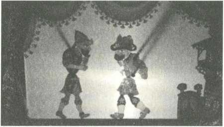
KaragözHacivatoynatıyordu.
Harf Devrimi sırasında Mustafa Kemal'in isteğiyle "okuma yazma öğrenen Karagöz"oyununuyazmıştı.
İnsanlar seyrederken hem kahkahalarla gülüyor hem Türk alfabesine
alıştırılıyordu.
Kuklatiyatrosununyaşatılmasıiçinçabaharcıyordu.
Teşvikediyordu.
DöneminenşöhretlikuklasanatçısıHadiPoyrazoğlu'ydu.
Geceliğibeşlirayatemsilveriyordu.
BiryazakşamıYalova'yadavetedildi,apartopargitti.
MustafaKemal'inkarşısındasahneyeçıktı.
Herakşamneyapıyorsaonuyaptı...
Kuklayapoposuylazurnaçaldırdı!
Temsilbitti,sahnearkasınageçti.
Neredeyse üstüne saldıracaklardı... “Sen ne yaptığını sanıyorsun, Gazi Paşa'nın karşısındaböylepopoylafilanespriolurmu?"dediler.
Kuklacıtitremeyebaşladı.
"Paşaseniçağırıyor"dediler,neredeysekorkudanbayılacaktı.
Halbuki...
MustafaKemalpopodanzurnayagülmektenbayılmıştı!
Kuklacınınelinisıktı,teşekküretti.
Sanatınıaynenböylesürdürmesiniricaetti.
Birzarfverdi,içinde50liravardı.
Gölgeoyunuvekuklaiçin"Türk'üncanlısineması"diyordu.
Sinemaperdesinebakıyor,küreselpropagandagücünügörüyordu.
Henüz 1920'de... "Sinemaöylebirkeşiftirki,güngelecek,dünyamedeniyetinin veçhesini, barutun, elektriğin, kıtaların keşfinden daha çok değiştireceği görülecektir.Sinema,dünyanınenuzakuçlarındaoturaninsanlarınbirbirlerini tanımalarım,sevmeleriniteminedecektir.Sinema,insanlarınarasındakigörüş ve görünüş farklarını silecektir. Sinemaya layık olduğu ehemmiyeti vermeliyiz"
diyordu.
Çankaya'da veya Dolmabahçe'de izleme imkânı varken, topluma örnek olmak için,ilgiyiartırmakiçin bizzat sinemayagiderdi.
Hattaherkesgörsündiyeyürüyerekgiderdi.
Beyoğlu'ndaOperaSinemasıvardı.
1924'te açılmıştı.
Yerlerkırmızıhalılarlakaplıydı.
Fraklı, beyaz eldivenliteşrifatçılarçalışıyordu.
İstanbul'ageldiğindegenelliklebusinemadafilmseyrederdi.
Ankara'daYeniSinema'yagiderdi.
Ulus'taki Yeni Sinema balkonluydu, altışar kişilik mavi kadife koltuklu localar vardı,ortadakilocaMustafaKemal'eayrılıyordu.
İzmir'deİkiçeşmelik'tekiAnkaraSineması'nıseverdi.
Kordon'daSinemaPalas'agiderdi.
AteştenGömlek filmini,savaşınkorkunçluğunuanlatan BatıCephesindeYeniBir ŞeyYok filmini,ortaçağFransa'sındageçen SerseriKral filmini,Viyana'dakibir aşkhikâyesinianlatan,müzikal KongreEğleniyor filminiseyrettiğinibiliyoruz.
"Şarlo"yaçokgülerdi,çokeğlenirdi.
Sinemayı,HarfDevrimi'ninyaygınlaşmasıiçinkullandı.
Sessizfilmlerdeki altyazılar Arapçaydı.
MetroGoldwyn,Paramount,KemalFilm,MajikFilm,OperaFilm,İrisfilmgibi
sinema tüccarlarıyla temas kuruldu, maliyeti milli eğitim bakanlığı tarafından karşılandı, altyazılar Türkalfabesineçevrildi.
1931.. . İlk sesli Türk filmi kabul edilen İstanbul Sokaklarında'yı İstiklal CaddesindekiElhamraSineması'ndaseyretti.
MuhsinErtuğrulyönetmişti.
Türk-Mısır-Yunanortakyapımıydı.
Semiha Berksoy, Hazım Körmükçü, Talat Artamel, İsmail Galip Arcan, Mısırlı Azize Emir ve Yunan Gavrilidis başrollerdeydi. İki kardeşin aynı kadına âşık olmalarını ve hayatlarınınmahvolmasınıanlatıyordu.Hemsanatçılarıbeğenmişti hemdeasılTürksinemasınıngeldiğinoktadanmutluolmuştu.
BİRMİLLETUYANIYOR
TürkçeSözlüFilminde
1932'de Muhsin Ertuğrul'un çektiği Bir Millet Uyanıyor filminin senaryosuna bizzatkatkılarsağladı,bufilmideElhamraSineması'ndaseyretti.
1937...MünirHayriEgeli'yleberaber BenBirİnkılapÇocuğuyum adlısenaryoyu yazdı.MustafaKemal'inağzındanMustafaKemal'inhayatıydı.
Belgeselmahiyetindeydi.
Maalesefsağlığıbozuldu,filmçekilemedi.
Bufilmlealakalıolarakelyazısıylaşutalimatıvermişti:
"Filmi çevirme işiyle Münir Hayri bizzat meşgul olacaktır, hemen Almanya'ya gidecek, senaryomuzu işleyecektir, Hasan Rıza gereken masrafı benden karşılayacaktır,MustafaKemal."
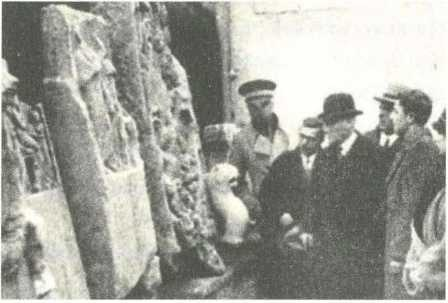
(Ben Bir İnkılap Çocuğuyum filminin senaryosu 137 sayfaydı. Orijinali, Milli Kütüphane'demuhafazaediliyor.)
TBMM'yikurdu.
Sadece16günsonra...
Asar-ıAtikaMüdürlüğükurulmasıtalimatıverdi.
Daha memleketin ne olacağı belli değilken, kültür varlıkları müdürlüğü tarafından"envanter"çalışmasınabaşlanmasını,örenyerlerinintespitedilmesini, korunmasınıistedi.
TopkapıSarayı'nımüzeyedönüştürdü.
1921-1936yıllarıarasındaTopkapı'nınyanısıra...
Efesantikkentinin,
Bergamaantikkentinin,
Ankaraarkeolojimüzesinin,
Ankaraetnografyamüzesinin,
KonyaMevlânâmüzesinin,
İzmir, Diyarbakır, Antalya, Sivas, Adana, Edirne, Kayseri, Tokat, Kütahya, Samsun, Van, Alanya, İznik, Silifke, Manisa, Amasya, Bursa, Afyon, Denizli, Isparta,Niğde,Kırşehir,SinopveÇanakkalemüzelerininaçılmasınısağladı.15
yılda30müzeaçtırdı.
“Melhame-i kübra, kan deryası" olarak nitelendirdiği Sakarya Savaşı olanca şiddetiyle devam ederken, işgal kuvvetleri Ankara'nın burnunun dibine kadar yaklaşmışken,topseslerişehirdenduyulurken, Meclis'in Kayseri'ye taşınma ihtimali varken, akıbetimiz belirsizken... “Eti müzesi"kurulmasıiçintalimatvermişti!
Memleketi"kültür"üzerineinşaetmekistiyordu.
Kültüryoksa,kültürkökleştirilmezse,savaşıkazansakbileayaktakalabilmenin mümkün olmadığım düşünüyordu. Eti müzesi fikri, Anadolu Medeniyetleri
Müzesiolarakhayatageçirildi.
Hitit ve Asianik Araştırmalar Derneği tarafından Fransa'da yayınlanan Hitit dergisininsponsoruydu.Fransıztarih ve arkeolojiprofesörleritarafından yayına hazırlanan derginin künyesinde "Gazi Mustafa Kemal'in himayesinde yayınlanmaktadır"ibaresiyeralıyordu.
Yıkıkdökükdurumdabulunan ve avlusukahvehaneolarakişletilenAyasofya'nın müzeolmasınısağladı.
Arkeolojikkazılarıbaşlattı.
Alacahöyük, Mustafa Kemal'in talimatıyla "ilk milli arkeolojik kazı" oldu.
Defalarca uğradı,kazı alanını gezdi, buluntularıinceledi.
Ankara'nın simgesi olan güneş kursu 1935'te bulundu, duyar duymaz derhal Alacahöyük'egeldi,heyecanı ve mutluluğugözlerindenokunuyordu.
1924’te sırfbuişiçinİzmir'egitti,Efes'i gezdi.
Bergamaantikkentini gezdi.
Vahdettin'leAlmanyaseyahatindeZeusSunağı'mincelemişti,ogünkühislerini, üzüntüsünüBergama'daanlatü.
1930'daAntalya’ya gitti,Aspendos'u gezdi.
Hasankeyf'in yüzey araştırması 1932 yılında Mustafa Kemal'in talimatıyla başlatıldı. 1933'te ilkkazmasıvurulan
Truvakazılarını,eldeedilenbulgularınkorunmasını,titizlikletakipediyordu.
9Eylül1922'deişgalcilerdenizedökülürken,İzmircayırcayıryanarken,Sardes antikkentineaitbuluntularçalınmıştı.
Çünkü...ManisaSalihli'dekiSardesantikkentiOsmanlıdönemindeAmerikalılar tarafından kazılıyordu. Buluntular İzmir'e taşınmış, bugünkü İzmir Atatürk Lisesi'nindepolarınayerleştirilmişti.
İzmir cayır cayır yanarken Amerikan konsolosluğu fırsat bu fırsat diye düşünmüştü, Sardes buluntuları 56 sandığa yerleştirilerek, New York'a
gönderilmiş,MetropolitanMüzesi'neteslimedilmişti.
Kelimenintammanasıylayangındanmalkaçırılmıştı!
MustafaKemalbunuaslaunutmadı.
Cumhuriyet ilan edilir edilmez son derece sert bir dille diplomasi başlattı. 53
sandık dolusu eser 1924 yılında geri alındı. Üç sandık hakkında “biz de bulamıyoruz,kayıp"filandemişlerdiama,hiçolmazsagerisikurtulmuştu.
1933yılındaÜniversiteYasasıhazırlanıyordu.
Taslaktayeralmıyordu,“arkeolojienstitüsü"nümonteettirdi.
“Tabiatın esrar dolu sinesine her gün daha çok girmekte olan insan zekâsı, realiteye kavuşmak için, insanlık tarihini aydınlatacak ilimler bulmuştur.
Arkeoloji işte o ilimlerin başında gelir. Tarih, bu ilimlerin bulduğu belgelere dayandıkça temelli olur. Bizim topraklarımızdaki tarih belgelerimizin her bir parçası,bizimkültürümüzünaynasıdır"diyordu.
“NeMutluTürkümDiyene"kavramının,kökeniydi.
Irk,din,dil,hattazamanfarkıgözetmeden,butopraklardavarolan,bizden'di.
Nazi zulmünden kaçan Alman bilim insanlarına kucak açarak, "çiviyazıları bilimi"nin Türkiye'de öğrenilmesini sağladı. Yüzyıllardır el sürülmeden duran Sümertabletlerininbilimdünyasınasunulmasınısağladı.
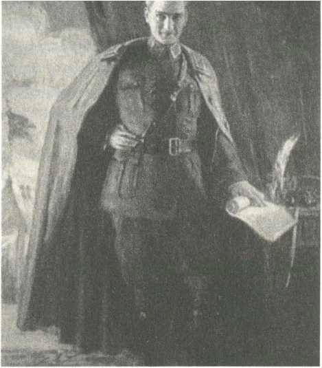
ÜniversitedeSümerolojibölümüaçılmasınısağladı.
OgünekadarSümercedeniyordu,SümerolojiadınıMustafaKemalkoydu.
Türkiye'nin ilk güzel sanatlar müzesini 1937'de Dolmabahçe Sarayı'nın Veliaht Dairesi'ndekurdurdu,bizzataçtı.
OsmanHamdibey,ŞekerAhmetpaşa,HüseyinAvniLifij,İbrahimÇallı,Nazmi
Ziya,HikmetOnat,Ayvazovski,PierreBonnardveMauriceUtrillo'nuneserleri
sergileniyordu.
"Birmilletkiresimyapmaz,heykelyapmaz,itirafetmeliki,omilletinilerleme yolundayeriyoktur"diyordu.
1928...Türkiye'ninilkkadınressamıMihriMüşfikhanım,mareşalüniformasıyla portresiniyaptı.
Tablo kendisine sunulduğunda, para kelimesini telaffuz etmek istemedi.
"Hanımefendibulütfunuzanasılkarşılıkverebilirim?"diyesordu.
MihriMüşfikhanım"saçınızdanbirtellütfedinkâfi"dedi.
Koltuğundan kalktı, karşısındaki koltukta oturan kadın ressamın önünde eğildi,
"buyurunuz"dedi..."Dilediğinizkadarısizindir."
Sanatçıları onore etmekle yetinmiyor, maddi açıdan desteklenmesi için tüm devletkurumlarınınbütçeayırmasınıistiyordu.
1935...OsmanHamdibeyinöğrencisi,FikretMualla'nmhocasıolanŞevketDağ
sergiaçmıştı.SongünMustafaKemalgeldi.Hangilerininsatıldığınısordu.
Maaleseftablolarınhiçbirinealıcıçıkinamıştı.
“Serginizigörmeyemillieğitimbakanı,millisavunmabakanı,başbakangelmedi
mi?"diyesordu.Hepsigelmişti.
GenelsekreteriHasanRıza'yadöndü.
“Bu kadar bakan içinde bir gören olmamış demek ki... Biz bu şaheserleri Çankaya'yagötürelimdedahayakındanseyredelim"dedi.
*
Hat, tezhip, minyatür, ebru gibi geleneksel sanatlarımızın yaşlanan ustalarıyla birlikte yok olmasını önlemek istiyordu. Bu amaçla, kız enstitülerinde, erkek sanat okullarında ders olarak okutulmasını sağladı, geçmişten geleceğe aktarılmasınısağladı.
Başkent'te inşa edilen yeni kamu binalarında, mutlaka çini, vitray, taş süsleme sanatlarındanörneklerkullanılmasınıistiyordu.
Hayatıertelemeden,doludoluyaşardı.
Gecehayatımseverdi.
1914...Sofya'daykenSplendideOtel'dekalıyordu.
Girişkatındabüyükbirgazinovardı,herakşamuğrardı.Bulgarsosyetesininve
üstdüzeygenerallerinengözdemekânıydı.SahibiPanayotKaragözofadındabir
Bulgar'dı,dostolmuştu.Birtaşlaikikuştu...
Hem akşamları biraz eğleniyordu hem de Panayot'u konuşturarak istihbarat alıyordu.
Eğlencenin çalışmak kadar önemli olduğunu, ikisini birlikte götürmeyi
başaranların“medeniinsan"olduğunusöylüyordu.
“Çalışmasını da biliyoruz, yaşamasını da biliyoruz, medeni insanın yolundayız, atalarımızınsözüvar,nimetiçinzahmetgerek,zahmetlernimetiçindir,çalışalım yaşayalım"diyordu.
Harbiye öğrencisiyken, arkadaşlarıyla sık sık Çemberlitaş'a giderlerdi, Tavuk Pazarı'ndaYorgo'nunmeyhanesineuğrarlardı.
Devamlımüşteriolduklarıiçinaçıkhesaplarıvardı.
Aybaşındamaaşıalıncakapatırlardı.
1932... Güzel bir yaz akşamı Dolmabahçe rıhtımında Nuri Conker ve Salih Bozok'la otururken, gençlik yılları aklına düştü. “Var mısınız Yorgo'ya gidelim" dedi. Kalktılar, hiç haber vermeden, baskın yaparcasına gittiler.
“Yorgobizgeldik"diyeiçeridaldılar,oturdular.
Beyaz önlüklü ihtiyar Yorgo'nun gözleri doldu. Tıpkı eski günlerdeki gibi masayıdonattı.Mezeleriherzamankigibimuhteşemdi.
Mustafa Kemal öbür masalardaki müşterilere döndü, “benim kim olduğumu
unutun, rahatsız olmayın, aranızda sizlerden biri olarak bulunmak istiyorum, keyfinizebakın"dedi.
İkisaatkadaryenildiiçildi.
Afiyetlekahveleryudumlandı.
Hesapmesapistemedenkalktılar,kapıyayürüdüler...
Mustafa Kemal tıpkı öğrencilik yıllarında olduğu gibi seslendi: “Yaz hesaba Yorgo,aybaşındaöderim!"
Yorgodatıpkıoyıllardaolduğugibisıcacıkkarşılıkverdi:“GülegüleMustafa
Kemal,genebuyur."
(Elbette,ertesigünhesabıfazlafazlagönderdi.)
Saklısıgizlisiyoktı.
" Kötü ruhlu kişiler dedikodumu yapmaya kalkıp, Mustafa Kemal dün akşam içkiiçmiş,dansetmişderlerse,evetiçti,evetdansetticevabınıverin.Herşeyi, günahı da sevabı da açık yapmak gerekir. Ne yapacaksak daima milletin gözününönündeyapacağız"diyordu.
Cumhurbaşkanı olduktan sonra insanlardan uzaklaşmadı. Tokatlıyan'a, Pera Palas'a, Garden Bar'a, Rose Noir'a giderdi. Yaz aylarında Büyükada Anadolu Kulübüfavorisiydi.KışaylarındaParkOtel'inakşamyemekleriniçokseverdi.
Birgeceyine ParkOtel'deydi.Hemen yanındakimasadagenç birsubay, eşiyle
birlikteyemekyiyordu,yanlarındasekiz-dokuzyaşındaoğullarıvardı.
Yurttaşların geceleri ailece dışarı çıkmalarından, ailece eğlenmelerinden çok memnun oluyordu. Eliyle işaret ederek çocuğu yanına çağırdı, yeleğinin cebindenplatinsaatiniçıkardı."Albunu,hediyemolsun,büyüyüncekullanırsın"
dedi.
(Türk insanı Cumhuriyet'le birlikte eğlenme özgürlüğüne de kavuşmuştu.
1930'lu yıllarda İstanbul, İzmir ve Ankara'da gece hayatı hayli renklenmişti.
Ailece gidilen restoran, gazino, varyete bar tabir edilen müzikli mekânların sayısındapatlamayaşanıyordu.Türkiye,geçiminibutüreğlencemekânlarından sağlayanmüzisyenvesanatçılariçinuluslararasısahnehalinegelmişti.
İstiklal Caddesi'nin mekânlarından çarliston, shimmy, foxtrot sesleri
yükseliyordu. Gece hayatının programları, İngilizce-Fransızca-Almanca, üç lisandayayınlanan Reflector dergisindentakipediliyordu.Amerikankökenli Rus vatandaşı, siyani Frederick Thomas'ın işlettiği Maxim, Beyoğlu'nun en popüleradresiydi.TepebaşıGarden,Londrarestoran,PeraAmbassadeur,Taksim Floria,ParkOtel,TokatlıyanOtel gözde mekânlardı.
Janko Orkestrası'nı, Macar Kadın Orkestrası'nı, Mezzy Balesi'ni izleyebilmek içingünleröncesindenrezervasyonyaptırılıyordu.)
Mustafa Kemal'in çok sıkıldığı Dolmabahçe'den kaçıp, tek başına bir eğlence mekânınagidebilmesi"harekâtplanı"gerektiriyordu.
Çünküparasıyoktu!
Maaşıyaverlerindeydi,ödemelerionlaryapıyordu.
Geneböyleçoksıkıldığıbirgün...
BaşyaverRüsuhi'yi aradı, bulamadı.
GenelsekreteriHasan Rıza, Avrupa'daydı.
YaverCelalÜner'ibuldu.
"Bana para lazım" diyemedi... "Şu masanın üstüne biraz bozuk para bırakın,
hizmetedençocuklarısevindirmekistiyorum"dedi.
Güyahizmetlileriçincepharçlığıistemişti.
YaverCelaldurumukavrayamadı...
Hakikatenbiravuçdolusubozuk parayla gerigeldi.
Masanınüstüne 1 liralık, 2.5 liralıkbozukparalarbıraktı.
Mustafa Kemal havanın kararmasını bekledi. Bozuk paraları cebine doldurdu, sırtına bir ceket aldı, yürüyüş yapıyormuş gibi dış kapıdan çıktı, ilk gördüğü taksiyiçevirmesiylekaybolmasıbiroldu.
"Sür" dedi...Tepebaşı'nagitti.
Mazarikisminderestoran-barvardı.
Harbiyeöğrenciliğindenberibiliyordu.
Taksiciyeparasınıödedi,kimseyesöylememesinitembihledi.
Mazarik'egirdi,birdublerakı, biraz leblebiistedi.
İllakonforlumekân aramazdı.
Bazı geceler Kireçburnu'ndaki Rum balıkçı lokantalarına giderdi, omuz omuza vererekneşeiçindeHasabikooynardı.
Beşiktaş'takiakşamcıkahvelerinegiderdi.
AnkaraUlus'takiKarpiçlokantasınınmüdavimiydi.
Bolşevikihtilalindenkaçan,"Karpiç baba" lakabıylatamnan,GürcükökenliJuri Karpovitchtarafındanişletiliyordu.AslındalokantanınismiŞehirLokantası'ydı ama, herkesKarpiçlokantasıdiyordu.
Kravatsız müşteri kabul edilmiyordu. Müzikliydi, pisti vardı, dans ediliyordu.
Masaları daima bembeyaz örtülüydü. Rus ve Fransız mutfağı servis ediliyordu.
Hatırlımüşterilerehavyarikramedilirdi.Garsonlarsmokinliydi,sosyalyaşamın merkeziydi.
Karpiç'tebirakşam cazçalanRomensanatçılarvardı.
Mustafa Kemal orkestra şefini çağırdı. "Size Türkçe şarkı okusam, ağzımdan çıkansözlerin tarzına görenotayaalıp,buenstrümanlarınızlaçalabilirmisiniz?"
diyesordu.
"Mani oluyor halimi takdire hicabım" şarkısını tane tane, ağır ağır, falsosuz okudu. Notaları kâğıda döken Romen şef "tekrar okuyabilir misiniz?" diye rica etti.Tekrarokudu.
Şeforkestrasınadöndü,konuştular,birkaçdenemeyaptılar.
Sonradaşahaneşekildeçaldılar.
MustafaKemal ayağa kalkarakalkışladı.
"Buşarkıyı caz repertuarınızailaveedin"dedi.
Hiçbirmekândatekkuruşhesapbırakmazdı.
Kimseninkendisinden para istemeyeceğinibildiğiiçin,kalkmadanöncemutlaka kontrolederdi,gazinocununparasınıödedinizmi?
Ödendicevabınıalmadan,eminolmadankalkmazdı.
Masakültürününüç ayrılmaz parçasıvardı.Kahve,sigara,rakı.
Çayaramazdı.
Kahvetiryakisiydi.
Günde30civarındaTürkkahvesitüketirdi.
Çalışırkenpeşpeşeisterdi.Köpüklüseverdi.
Sadeiçerdi.
Savaş yıllarında şeker çok kıymetliydi, karaborsada bile bulmak çok zordu.
Ömrüsavaşlardageçenjenerasyonuntamamı gibi, MustafaKemaldemecburen şekersiziçmeyealışmıştı.
YurtiçiseyahatlerineeşlikedenkütüphanecisiNuri ve garsonu İbrahim, ne olur ne olmaz belki gittiğimiz yerde bulunmaz diye düşünerek, yanlarında mutlaka çiğkahve,çekilmiş toz kahve, cezve taşırlardı.
Sonkahvesini7Eylül 1938 sabahıiçti.
Hastaydı,ağırlaşmıştı.
MuayenesinitamamlayanProfesörFiessingerciddişekildeuyardı."Görüyorum kiönerilerimipekdikkate
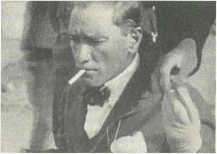
almıyorsunuz, sigarayı azaltmış olmanız memnuniyet verici ama, lütfen kahve içmeyin,şuandabirfincankahvesiziniçinalkoldendahatehlikeli,lütfenkahve alışkanlığından vazgeçin" dedi.
MustafaKemalusluuslu"peki"dedi...
"Sonkahvemibirlikteiçmeyiteklifediyorum."
Kahvelergeldi.
Vedalaşırgibi ağırağır yudumladı.
Profesörsaraydanayrıldıktansonra, odaya SabihaGökçengirdi.MustafaKemal üzgün birsestonuyla "gel Sabiha"dedi..."Sanabirsırvereceğim,kahveiçmem katisuretteyasaklandı,şufincanıgörüyormusun,işte o benimsonkahvem!"
Sabihafincanıaldı.
Yıkanmasıiçinmutfağagötürüyormuşgibiyaptı.
Telvesiylebirliktesakladı.
Günde iki paket civarında sigara içiyordu. Mesai uzarsa, üç pakete çıktığı biliniyordu.
(Bugününsağlıklıyaşamalgısındanbakılınca,anlaşılması,makulkabuledilmesi zoroluyorama,sigaranıninsansağlığınazararları1950'liyıllarakadarmaalesef bilinmiyordu. Hatta sigara kullanmak prestij göstergesi sayılıyordu. Birinci Dünya Savaşı'nda cephelere tütün yollamak için kampanyalar bile düzenleniyordu. Savaş yıllarında yaşanan trajediler, tüm Avrupa gibi Türk insanını da sigara bağımlısı haline getirmişti. Sigara kullanmanın yaşı yoktu, dokuz-onyaşındakiçocuklarıniçmesibileanormalkarşılanmıyordu.) Tekel'in kendisi için özel olarak ürettiği G.M.K. amblemli, ucu yaldızlı sigara vardı.Tenekekutudasatılan"Gazi"sigarasıvardı.AmageneldeBoğaziçiveya Bozkurtmarkalarınıtercihederdi.BazenBafraMadeniçerdi.
Hepsifiltresizdi.
Sigaraağızlığınıenderkullanırdı.
Cebindepakettaşımazdı,sigaratabakasıylataşırdı.
Cebindetütünkırıntısıkalmasınatahammüledemezdi.
Altın,gümüş,telkari,ahşap,sedef,20kadarsigaratabakasıvardı.
Evliyken,Latifehadiseyeelkoymuştu...
Sigaratabakasınahersabah10adetsigarayerleştiriyordu.
Ertesisabahakadaridareetmesiniistiyordu.
Buşekildesigarayıazaltabileceğinidüşünüyordu.
Mustafa Kemal ise ele avuca sığmaz çocuklar gibiydi... Garsonları
tembihleyerek,köşkünçeşitliyerlerinesigarapaketlerisaklıyordu.
Bir gün, zulaladığı sigara paketlerinden birini çıkarırken Hasan Rıza Soyak'a yakalandı.Utandı.
Paketi telaşla çekmecesine geri attı. Yarım ağızla tebessüm ederek “misafirlere ikramederimdiyegetirtmiştim"diyebildi.
Kahvedeyaptığıfedakârlığı,sigaradayapmadı.
ProfesörFiessingergündekaçpaketsigaraiçtiğinisorduğunda"sekiz"cevabını verdi. Profesör şoke oldu. "Bunu en fazla iki pakete indirmeniz gerekiyor"
deyince de, gülmeye başladı... "Zaten iki paket içiyorum, bundan böyle sizin resmiizninizleyapmışolacağım"dedi.
Sigarayladüşünürdü.
Dalgın dalgın, kimseyle konuşmadan helezonvari dumanlar çıkarıyorsa, hassas birkararınarifesindeolduğuanlaşılırdı.
Parmaklarısigarayüzündensararmışolanlaraçoksinirlenirdi.Sigaratablasında izmaritbirikmesineçokkızardı,neredeysehersigarayısöndürdüktensonratabla temizlenirveyadeğiştirilirdi.
Rakıiçerdi.
Zihninidinlendirmeilacıydı.
Hayatında ilk kez, Harbiye öğrencisiyken Büyükada'da tatmıştı. Arkadaşı Ali Fuat'ın hatıralarına göre, ilk yudumunu aldıktan sonra "ne iyi içkiymiş bu, insanınşairolası geliyor" demişti.
Adabıyla,ölçülütüketirdi.
Sarhoşolduğuaslagörülmedi.
Konuşmasınınbozulduğuaslagörülmedi.
Gündüziçmezdi.
(Sanki elinden kadehi düşürmüyormuş gibi anlatırlar ama, Mustafa Kemal'in elinderakıkadehiyleçekilmişfotoğrafıbileyoktur.)
Savaşlarsırasında ağzına sürmezdi.
HalideEdipAdıvar Türk'ünAteşleİmtihanı isimliromanında,MustafaKemal'in buhassasiyetinikaydageçirmişti:"Karargâhtaadetamanastırhayatının riyazeti içinde yaşıyorduk. İçkiye karşı daima nefsine hâkimdi. İçkiye iptilası rivayet edildiğihalde ağzına birdamlaalkolalmamıştı."
9 Eylül'denüçgünsonra 1922...
Kordon'da,KramerPalasOteli'ndeydi.
Cumbadaoturuyordu.
Usul usul batan güneşin adeta bir kavuniçi top gibi İzmir Körfezi'ne inişini seyrediyordu, manzara muhteşemdi.
Rumgarsonaseslendi.
-Gelçocuk!
Garsonkorkudantitriyordu,ş'leredilidönmeyenkırıkdökükTürkçesiyle"buyur pasam"dedi.
İşgal sırasında kasıla kasıla İzmir'e gelen Yunan Kralı Konstantin'i kastederek
“sizinKostigeldimiburaya?"diyesordu.
-Geldipasam.
-Oturdumubumasaya?
-Oturdupasam.
-Güneşbatarkenrakıiçtimi?
-İçmedipasam.
-Esormadınmıbeçocuk,niyealmayakalkmışİzmir'i!
(Kramer Palas Oteli, İzmir yangınında kül oldu. Mustafa Kemal yaz aylarında İzmir'e geldiğinde, kaplıcalarından faydalanmak için Çeşme Ilıca'ya giderdi, otelin sahibi Kramer Ailesi'nin villasında kalırdı. Yıldızburnu'nda, bugünkü dalgakıran'ıntamkarşısındaydı.) “Leylekboynu"tabiredilenkadehleiçerdi.
Çay bardağından biraz büyüktü, bugünkü rakı kadehlerinin yarısı ebatındaydı.
Dipkısmıağızkısmınaoranladahadarkadehlerdi.
Henüz limonata bardaklarından kadeh türetilmemişti, geleneksel rakı kadehleri leylekboynu ve yüksük'tü. Yüksük kadeh günümüzün shot bardağı kadardı, tek ve susuz içilirdi. Mustafa Kemal duble ve su ekleyerek içtiği için leylekboynu tercihederdi.
KadehleriG.M.K.armalıydı,ağzıyaldızlıydı.
DimitrakopuloveBilecikmarkalarınıseverdi.
Dimitrakopulo rakısı İstanbul'da 1883'ten beri özel sektör tarafından, Dimitrakopulo kardeşler tarafından üretiliyordu. 1928'de Paris'te altın madalya 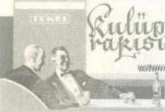
kazanmışbiriçkiydi.1936'daTekelüretimebaşlayıncakanunçıkarıldı,özelrakı imalathanelerikapatıldı.Dimitrakopuloşarapmarkasıolarakdevametti.
SenelerdenberlTUrkfyeninhertarafın-dapekbUyUknamkazananBilecikra—
kıfabrikasınınimaletmekteoldujju
Fevkalâde
BiLECiKRAKISI
ile45derecelik
OLGUNRakısı
sahip ve amili, saygı değer halkımızın yeni senelerini kut-lular ve saadetlerini diler._
Bilecik rakısı, Istepan Berberyan tarafından Galata'da üretiliyordu. Fiyatı biraz dahapahalıydı,alkoloranıdahayüksekti.BerberyanailesiBilecikliydi,rakının ismioradangeliyordu.
(Kulüprakısı'ınnetiketindekipapyonlukişi,yıllarcaMustafaKemalzannedildi.
Mustafa Kemal'le Ismet İnönü'ye benzetildi. Halbuki... Grafik sanatının öncüsü IhapHulusitarafındançizilmişti.Etiketteki
kişilerIhapHulusi'yleyakınarkadaşışair Fazıl AhmetAykaç'tı.)
Fevzi Çakmak gibi beş vakit namaz kılan konuklan geldiğinde, hem içmezdi hemdesofrayaiçkiservisiyaptırmazdı.
Birakşam,konuklararasındaNeyzenTevfikdevardı.
Neyzennekadarçokiçebildiğini,nekadardayanıklıolduğunukanıtlamakiçin
ekmek istedi, önündeki boş tabağa doğradı, üstüne rakı döktü, çorba içer gibi kaşıklamayabaşladı.
MustafaKemal'inbütünneşesikaçtı...
"Kabahatsendedeğil,seniiçkiiçmeye çağıranda" dedi!
00«»Ot70cı700n
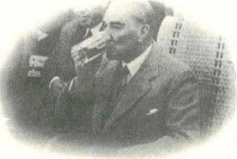
Buzkoymazdı.
Buzgibisuisterdi.
Meze aramazdı.
Sarıleblebiolmazsaolmazıydı.
Temekleberaberiçmezdi.
Öncerakıfaslınıgeçer,üstüneyemeğiniyerdi.
Sofradaaltı-yedisaatotururdu.
Bununen fazla bir-ikisaatirakı'lıolurdu.
Nadirenviskiiçerdi.
Tatlıiçkileri,kokteylleripeksevmezdi.
Şarap ve şampanyayı resmi ağırlamalarda tercih ederdi. Yabancı misafirlere ikramedildiğindemasayagelirdi.
Sıcak yaz akşamlarındabazensoğukbiracanıçekerdi.
(MustafaKemal'e "bira" yüzündeninanılmaziftiralaratıldı.OrmanÇiftliği'nde bira fabrikası kurduğu, minik Ülkü başta olmak üzere, çocukların eline bira 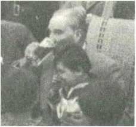
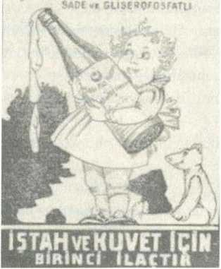
şişesiverdiği,çocuklarabiraiçirdiğisöylendi.
Halbuki... Orman Çiftliği'nde bira fabrikasının yanı sıra malt fabrikası kurulmuştu. Bu fabrikada çocuklar için, sağlığa yararlı, elbette alkolsüz, malt hülasası üretiliyordu. Tüm dünyada çocuklar için kullanılan gıda takviyesiydi.
"ŞarkMaltHülasası"adıaltındaüretilenbubesleyiciiçecek,herkesulaşabilsin diyeeczanelerdesatılıyordu.
Etiketinde ne işe yaradığı izah ediliyordu. "Umumi zafiyette büyük faydaları olan
gıdadır.
Çocukların
dişlerinin
kolayca
çıkmasına,
kemiklerinin
kuvvetlenmesine, çocuk emziren annelerin sütünün çoğalmasına yardım eder.
Çocuklarayemeklerdenevvelbirveyaikiçorbakaşığı,büyüklereyemeklerden
evvelbirfincan" yazıyordu.)
SARKMRLTHÜLASASI
(Çocuklara bira falan içirilmediği gibi, tam tersine, çocukları ve gençleri alkolden korumak için mücadele eden Yeşilay'a, bizzat Mustafa Kemal tarafından"kamuya yararlı dernekstatüsü"verildi.) H
Alkoleşiğiyüksekti.
1922... Ekim Devrimi'nin önderlerinden Mihail Frunze, Ankara'ya gelmişti.
SovyetBüyükelçiliği'ndeMustafaKemalonurunayemekveriliyordu. 120
konuk vardı, dev masa kurulmuştu. Turgenyev'den, Tolstoy'dan,
Dostoyevski'denkonuşuluyordu,votkasugibiakıyordu.
Frunzebir araayağa kalktı..."Na zdarovye" diyerekpeşpeşeüçkadehkonyağı fondip yaptı. Hem gelenekti, hem de Rusların ne kadar sert içebildiğinin gösterisiydi.
Mustafa Kemal cevaben ayağa kalktı... "Na zdarovye tavariş, yarasın yoldaş"
diyerek, aynı konyaktan peşpeşe beş kadehi fondip yaptı, sohbetine kaldığı yerdendevametti.
O günlerdemeşhurhikâyeydi...
Gazeteci yazar Ahmet Rasim, Yeşilay Derneği'nin toplantısında sormuştu,
"eşeğinönünebirkovasu,birkovarakıkoysanız,hangisiniiçer?"
"Tabiikisuyu"diyecevaplanınca,tekrarsormuştu,"neden?"
Salondabulunanbirkeyifehliseslenmişti,"tabiikieşekliğinden!"
MustafaKemalbuyaşanmışhatırayabayılırdı.
Herfırsattaanlatırdı.
Bir akşam orman çiftliğinde sofrada otururlarken, işçi çocuklarından biri onları seyrediyordu. Yanına çağırdı. Çocuk rakı sohbetinin üstüne geldiği için Ahmet Rasim'in sorusunu sordu, "eşeğin önüne bir kova su, bir kova rakı koysak, hangisiniiçer?"
Çocuk "rakıyı" diyecevapverdiiyimi...
BubeklenmedikcevapüzerineMustafaKemalkahkahayıbastı:
"Amannedendiyesormayalım!"
Çankaya Köşkü'nün bodrum katında kav vardı. Terekesindeki döküme göre, MustafaKemalvefatettiğindeşunlarkalmıştı...
38şişeerikrakısı(evyapımı)
50şişeMacarşarabı,kırmızı
25şişeRenşarabı, beyaz
ÜçşişeChâteauMargaux,kırmızı
İkişişeGrandPommard,kırmızı
ChâteauGuiraud,kırmızı
ChambertinGrand,kırmızı
İkişişe Gonzalez Byass,kırmızı
ChablisPremier,kırmızı
RoyalClaret,kırmızı
17şişeSaintReims(şampanya)
Continental(şampanya)
AnisadoRefinado(acıbademlikörü)
Nuyens(vişnelikörü)
BlackandWhite(viski)
Insuperable(brandy)
Nuyens(cin)
İkişişeFineChampagne(konyak)
İkişişeLebron(konyak)
İkişişeMartinique(rom)
ÜçşişeCinzano(vermut)
"Arkadaşlar,burakıyıvaktiylepadişahlardaiçerdi, yalnız aramızdakifark,onlar saraylarının dört duvarı arasında gizlenip müraice (ikiyüzlü) içerlerdi, ben ise aziz milletiminhuzurundayapıyorum,şerefimleiçiyorum"diyordu.
Pokerustasıydı.
Özellikleparasınaoynardı.
Çalışmaarkadaşlarınınhırs'larını,tamah'larını,zafiyetlerinipokermasasındatest ederdi.
Kazanırsa,kazandığıparalarıiadeederdi.
Kaybederse,öderdi.
Onunparasınıillaki alır, çıldırtırdı.
Bir tren yolculuğu sırasında karşılıklı oturdular. Nuri bu defa kazanmaya kararlıydı. Salih Bozok'u ayarlamıştı. Salih oyun sırasında Mustafa Kemal'in arkasında duracak, elindeki kâğıtlara bakacak, önceden belirledikleri kaş göz şifreleriyle işaret verecekti. Nuri kazanacak, sonra da Mustafa Kemal'le alay edecekti,planbuydu.
Başladılar...
Önceleri fena gitmiyordu. Nuri devamlı kazanıyordu. Yarım saat kadar sonra, MustafaKemalşakdiyerestçekti.Salihiki rua'yı görmüştü,ikirua'sıvardiye işaretverdi.Nurirestigördü.
Elleriniaçtılar. O dane?
MustafaKemal'inelindekareruavardı!
Çünküolanbiteninbaşındanberifarkındaydı,Salih'inişaretverdiğinibiliyordu.
Elinigösteriyormuşgibi yapıp, rua'larınikisinigizlemişti.
Mustafa Kemal tatlı tatlı gülümserken, Nuri her zamanki gibi öfkeyle
bağırıyordu:"BravoyahuSalih,tamgörmüşsünyanibirader!"
Pokeridiplomasiaracıolarakkullanırdı.
İngiliz,Fransızelçileriylepokeroynardı.
1926... Amerikan büyükelçisi Mark Bristol, Nuri Conker ve Falih Rıfkı Atay karesiylemasayaoturdu.
Bristol oyunun başlarında pek şanslıydı, bizimkiler per bile bulamazken, Amerikalışakırşakırfulleri,kareleriçıkarıyordu,pekkeyifliydi.
İzleyenlerarasındabulunanAhmetAğaoğlu“paraparayıçeker"dedi.Amerikalı büyükelçidahadakeyiflendi,kahkahalarlakazanıyordu.
Birsaatkadarsonraşansıdönüverdi...
Mustafa Kemal ve Conker kareleri, floşları çıkarırken, Amerikalı beş
benzemez'lesiniroluyordu,kaybettikçekaybediyordu.
Büyükelçinin eşi Helen Bristol da izleyenler arasındaydı, yüzünden düşen bin parçaydı, daha fazla tahammül edemedi, rahatsızlandığım öne sürerek ayağa kalktı.“Kendimiiyihissetmiyorum,gidelimlütfen"dedi.Eşinindahafazlapara kaybetmesiniönlemeyeçalışıyordu.
Gelgörki,büyükelçiningözükimseyigörmezhaldeydi.Devamedersemşansım
döner diye düşünüyordu. “Sen git, ben oyun bitince gelirim" dedi, eşini yalnız gönderdi.
Sabahakarşıdördekadardevamettiler.
Oyunbitti.
Fişlersayıldı.
Amerikanbüyükelçisionbinlirakaybetmişti!
Ufakçaplıbirservetti.
Yanındaokadarnakitbulunmasıelbetteimkânsızdı.Kıpkırmızıolmuştu,utana
sıkıla,borcunuödeyebilmekiçin24saatsüreistedi.
MustafaKemalcevapvermekyerine“şampanyagetirin"dedi.
Getirdiler.
“Sizdenbirkadehşampanyaricaedebilirmiyim?"dedi.
Amerikanelçisişampanyayıpatlattı,kadehidoldurdu.
MustafaKemalkadehikaldırdı...“MisterBristol'unelindenbirkadehşampanya
içmek,onbinliradançokçokdahadeğerlidir"dedi!
ABD, ABD olalı bu hale hiç düştü mü bilmiyorum ama... Koskoca amiral—
büyükelçibiryandaneziliyor,biryandanparasımkurtardığıiçinseviniyordu.
1928... Bristol'dan sonraki Amerikan büyükelçisi Joseph Grew, hatıra defterine şunları yazmıştı: "İngiltere büyükelçisi sir George Clerk veLondonTimes gazetesinin muhabiri Collins'le sohbet ediyorduk. Müzik ve dans vardı, büfe çok zengindi. Ruşen Eşref bey yanıma geldi, Mustafa Kemal'in benimlepokeroynamakistediğinisöyledi.
İkiTürkhamını,ben,millieğitimbakamMustafaNecatibey ve MustafaKemal oyun masasına oturduk. Dehşetli şansım vardı. Gazi'nin fulüne karşılık kare çıkardım, fişlerini benim önüme doğru itti, yanağımı dostane şekilde okşadı.
Ama... Sabaha karşı oyun bittiğinde, Mustafa Necati bey dört bin lira, ben 900
lira kaybetmiştim. Sadece Mustafa Kemal kazanmıştı. Hesapları tutan Ruşen Eşref'tendestelenmişparalarıaldı, gayet nazikaneşekildekaçlirakaybetmişsek 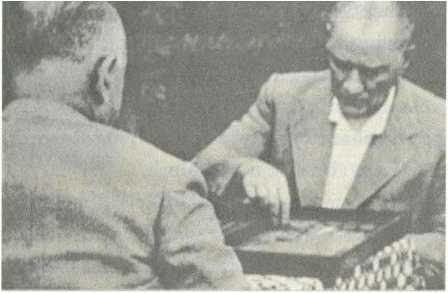
hepsinigeriverdi.
Kazananvardı,kaybedenyoktu!
Eşibulunmazbirpokerpartisiydi."
İskambiloyunlarınıntamamınahâkimdi.
Briçoynardı.
Bezikoynardı.
Kanastaoynardı.
Tavla'ya Manastır'daykenbaşlamıştı.
CumatatillerindeKavaklaraltıkahvehanesinegiderlerdi.
Harp okulu öğrencisiyken, Babıâli'de Stefan'ın kıraathanesine, Meserret Kıraathanesine,Sirkeci'deYani'ninkıraathanesinetakılırlardı.
fr
Bilardocuydu.
Beyoğlu'ndaki Lüksemburg kıraathanesinde öğrenmişti. O zamanlar kahvehane oyunu değildi, aksine zengin sporuydu, eğitimli ailelerin evlerinde bilardo masasıbulunurdu,ayrıcalıkgöstergesiydi.
Altı tane masası bulunan Lüksemburg'da Fransızca konuşulurdu. Müşterileri, Levanten işadamlarından, diplomatlardan, paşa çocuklarından ve Harbiye öğrencilerinden oluşuyordu. Ödüllü turnuvalar, 300400 seyircili maçlar oynanıyordu.MustafaKemal,Lüksemburg'unsahibiNikoCankopulos'a"bilardo hocam"diyordu.
ÇankayaKöşkü'ndebilardomasasıvardı.
Akşamyemeğindenöncemisafirleriyleoynardı.
Bilardoyudadiplomasiaracıolarakkullanırdı.
Dolmabahçe Sarayı'nda konuk devlet adamlarıyla veya yabancı büyükelçilerle bilardooynamakistediğinde,Lüksemburg'danmasataşınıyordu.
Tekbaşınabilardooynuyorsa,düşünüyordemekti.
Aradaistekayıbırakır,notlaralırdı.
Dine,dindarasaygılıydı.
Dintüccarına, yobaza aslamüsamahagöstermezdi.
"Din, Allah ile kul arasındaki bağdır, softa sınıfının din simsarlığına asla müsaade edilmemelidir, dinden maddi menfaat temin edenler menfur (tiksinti verici)kimselerdir"diyordu.
1922... Saltanatın kaldırılması görüşmeleri yapılırken, bazı milletvekilleri
"Mustafa Kemal halife olsun" teklifinde bulundu. Mısır ve Hindistan'daki Müslümanlarındabugörüşteolduğusöylendi.
Sinirindenacıacıgülümsüyordu...
"Bunlarbeni,başımda yeşilsarık,yüzümde uzunsakal,geniş bircübbeiçinde, elimde tespih, uhrevi bir adam yapmak istiyorlar. Hayrete şayandır, bunların kalınkafalarıbenianlamıyor"diyordu.
Kadirgecelerioruçtutardı.
Ramazan'daşarkllıtürkülüdavetlere ara verirdi.
Kandilgecelerindedeöyle.
İçkiiçmezdi.
Akşamsofralarıiftaradönüşürdü.
YaşarOkur'u çağırır, Kur'an-ıKerimokuturdu.
YaşarOkurözel hafızıydı.
Tekkede yetişmiş, musiki eğitimi almış, Saray'a girmişti, sultan Reşad'ın Vahdettin'in ve halife Abdülmecid'in hanendesi ve başmüezziniydi. Cumhuriyet ilanedilinceAnkara'yagelmiş, 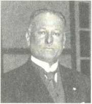
CumhurbaşkanlığıFasılHeyetiŞefiolmuştu.
1930'da emekliyeayrıldı ama, Köşk'tenayrılmadı.
Mustafa Kemal hiç kimsenin emeğini bedavaya getirmezdi... Gönüllü olarak çalışmaya devam eden hafızına 1930'tan itibaren ölümüne kadar her ay kendi cebinden100liraverdi.Emekli hafız maaşınınikikatıydı.
Ramazan ayı boyunca Hacı Bayram Veli ve Zincirlikuyu camilerinde şehitlerimizinruhunahatimindirtirdi.
1932... Sadettin Kaynak hatıralarında şu çarpıcı bilgiyi aktarıyordu: "Ramazan ayıydı. Dolmabahçe'de büyük muayede salonunda hafızları toplamıştı.
Gazi'nin elinde Cemil Said'in Türkçe Kur'an-ı Kerim'i vardı. Evvela hafız Kemal'e verdi, okuttu, beğenmedi. Ver bana, ben okuyacağım dedi.
Hakikaten okudu. Hâlâ gözlerimin önündedir, askeri kumanda eder gibi,
emirverirgibibirahenk ve tavırlaokudu."
Referans aldığı kitaplardan biri, dönemin en ünlü şarkiyatçılarından Leone Caetani'nin İslamTarihi eseriydi.HazretiMuhammed'inliderliğinin,savaşlarının anlatıldığıbölümlerinaltınıçizmişti,"mühim"diyenotdüşmüştü.Altınıçizerek okuduğu diğer bölümler "oruç" ve "ramazan bayramının ortaya çıkışı"yla alakalısatırlardı.
BedirSavaşı'nıaskeriaçıdanincelemişti.
Kendielleriyleharitasınıçizmişti.
"Hazreti Muhammed'in peygamber olduğundan şüphe edenler şu haritaya baksınlar, Bedir destanı'nı okusunlar, bir avuç insanla mahşer gibi kalabalık ve alabildiğinezenginKureyşordusunakarşıkazandığıbüyükzafer,faniinsanların kârı değildir, Hazreti Muhammed'in peygamberliğinin en kuvvetli delilidir"
diyordu.
Kur'an-ıKerim'itümincelikleriylebilirdi.
OrijinalArapçasınıdefalarcaokumuştu.
TürkçeveFransızcaçevirilerinidefalarcaokumuştu.
Tefsirederdi.
Mustafa Kemal'in tarih boyunca tüm devrimcilerden farkı, din'di... İslamiyete, inançkavramınaentelektüelseviyedekafayormuştu.
Mecliskararıylaözelbütçeayırarak,Kur'an-ıKerim'iTürkçeyetercümeettirdi, tefsir ettirdi, onbinlerce bashrtarak halka ücretsiz dağıttı. Kendi dilimizde anlaşılarakokunmasınısağladı.
İlk bilimsel hadis çalışmasını yaptırdı. Temel hadis kaynağı kabul edilen Buhari'yiTürkçeyeçevirtti,yineonbinlerceücretsizdağıttı.
Halkın kendi dilinde kavrayarak, kendi dilinde hissederek camilere yönelmesi içinçabaharcadı.TürkçeKuran,Türkçehutbe,Türkçeezanokuttu.
«t
1931...RamazanınlS'incigünüydü.
Yaşar Okur, Yerebatan Camisi'nde cuma namazını müteakip "müşfik ve rahim olanAllah'ınadıyla"diyebaşlayarak,tarihteilkkezTürkçeKuranokudu.
Ardından... Hafız Burhan, Hafız Kemal, HafızZeki,Hafız Nuri, HafızRıza,Hafız Fahri, Hafız Rifatbeyler,SultanahmetCamii'ndeTürkçeKuranokudu.
Cemaatinçokönemlibölümü,kadındı.
Hafız Rifatbey,FatihCamii'ndetarihteilkkezTürkçe ezan okudu.
İlkTürkçehutbe,SüleymaniyeCamii'ndeokundu.
Kadir Gecesi'nde Ayasofya'da 30 hafız, Türkçe Kuran okudu. Ayasofya'ya 100
bineyakıninsangelmişti.
Radyodannaklenyayınlandı.
"Müslümanlarıntoplumsalhayatındahiçkimseninözelbirsınıfolarakvarlığını korumayahakkıyoktur.
Kendilerindeböylebirhakgörenler,dinihükümlere göre hareketetmişolmazlar.
Bizderuhbanlıkyoktur.Hepimizeşitiz.
Dinimizinhükümlerinieşitolaraköğrenmeyemecburuz"diyordu.
♦
1928... Güzelbir yaz günüİzmirvapuruylaSamsun'agidiyordu,Sinop'a uğradı, Sinop Kalesi'nin yanında gölgeliğe oturdular, şehrin ileri gelenleriyle sohbetediyordu.
"İçecekbir şey var mı!" diyesordu.
"Gemidebuzlubira var" dediler.
"Getirin"dedi.
Herkeseikramettiler.
Herkesteşekkürederekbirasınıalırken,birkişininalmadığını,içmediğinigördü, dikkatiniçekti.
“Siz niyebuyurmadınız?"diyesordu.
İmamdı. O yüzdenalmamıştı.
"E canım bu sıcak havada böyle oturmasın, hocaya soğuk bir şeyler getirin"
dedi. Ayran getirdiler. Sohbete devam ederlerken, aniden yine imama döndü.
"Hocambusıcaktabuzlubiraiçilmezmi?"diyesordu.İmam"efendimharam"
dedi."Pekiniyeharam?"diyeısraretti.İmamcevapveremedi."Bununhakkında bir ayeti kerime, bir hadisi şerif yok mu?" diye sordu. İmam gene cevap veremedi, samimi şekilde itiraf etti, "paşam sana doğrusunu söyleyeyim, ben buraya muhacir geldim, iş aradım bulamadım, yapabildiğim kadar imamlık yapıyorum,seninsorduğunkadarderininibilmem"dedi.
MustafaKemalbusamimicevabasamimikarşılıkverdi, "aferin" dedi,"Türk ve Müslümanyalansöylemez,yalansöylemediğiniçinseniaffediyorum.Amabak burası deniz kenarı, buraya bir ecnebi gelse, İslam dini hakkında soru sorsa, bihabersin. Müftü efendiye gideceksin, dersini alacaksın, sonra gelip seni imtihanyapacağım.Senenbüyükvazifedebulunuyorsun,bilgiliolacaksın,için dışıntemizolacak"dedi.
Valiyedöndü... "Hocaya benimtarafımdanikitakımelbiseyaptırın"dedi.
Sonra kalabalığa döndü... İçkiyle alakalı ayeti okudu, mealini anlattı, herkes şaşırdı.
"Allah'ın men ettiği şeylerin damlası dahi haramdır, fakat Allah büyüktür, affedicidir,Allahkusurumuzuaffetsin"dedi.
Birasınıbitirdi,kalktı.
Tevrat veİncil'iokumuştu.
EskiAhit ve YeniAhit,kütüphanesindeyeralıyordu.
İbrani,Keldani ve Yunanlisanlarındantercümeydi.
AgopBoyacıyanmatbaasıtarafından1886'dabasılmıştı.
*
AngeloGiuseppeRoncalli,piskopostu.
İstanbul'daPapalıktemsilcisiydi.
“Din adamlarının dini kıyafetlerini sadece ibadet yerlerinde giymelerine" dair kanun çıkarılınca, devrim kanmalarına tereddütsüz saygı gösterdi, hiçbir kurumsalimtiyaztalebindebulunmadı,Türkiye'desivilkıyafetledolaşanilkdin adamıoldu.
Mustafa Kemal, bu uyumlu davranışı nedeniyle piskopos Roncalli'ye iki takım elbise,birpardösü,birfötrşapkahediyeetti.
Piskopos,Türkdostuydu.
Dersaldı,akıcıTürkçeöğrendi.
Günlük tutuyordu. Yıllar sonra kitaplaştırılan hatıralarına göre, Mustafa Kemal devrimlerinihayranlıklatakipediyordu.
"Buradayepyenibirdünyavar"diyordu.
TürkiyeCumhuriyeti'ndesonderecerahatyaşadığını,kendisinirahathissettiğini, hatta, Hıristiyan din adamı olmasına rağmen asıl sıkıntıyı Yunanistan'da yaşadığını, Yunanistan'a girmekte güçlük çektiğini anlatıyordu. Günlüğüne defalarca"Türkleriseviyorum"diyeyazmıştı.